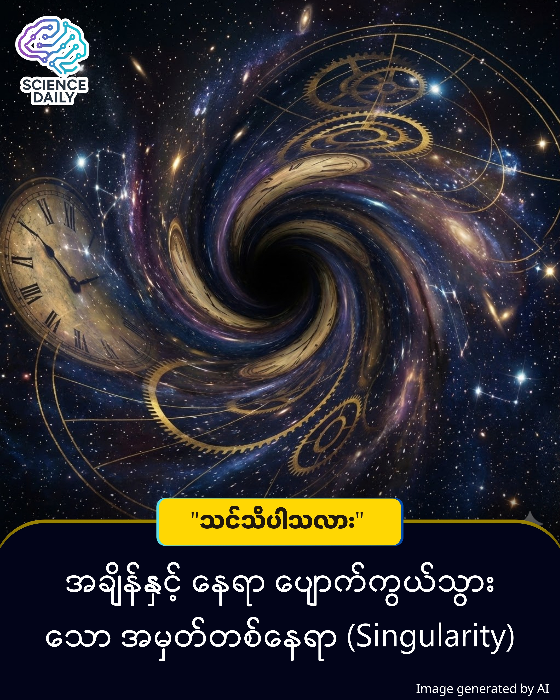

Singularity (ဆင်းဂူလာရတီ) - ရူပဗေဒနိယာမတို့ ရပ်တန့်သွားသော နေရာ
မိတ်ဆွေ... ကျွန်တော်တို့ နေထိုင်ရာ စကြဝဠာကြီးကို တိကျခိုင်မာတဲ့ ရူပဗေဒနိယာမတွေနဲ့ တည်ဆောက်ထားတယ်ဆိုတာ မိတ်ဆွေလည်း လက်ခံထားမှာပါ။ ပန်းသီးတစ်လုံး ကြမ်းပြင်ပေါ် ပြုတ်ကျတာကနေ ဂြိုဟ်တွေ နေကို လှည့်ပတ်နေတာအထိ အရာအားလုံးမှာ တွက်ချက်လို့ရတဲ့ စည်းမျဉ်းတွေ ရှိပါတယ်။

Singularity (ဆင်းဂူလာရတီ) - ရူပဗေဒနိယာမတို့ ရပ်တန့်သွားသော နေရာ
စာဖတ်သူများသို့ မေတ္တာရပ်ခံချက်
မိတ်ဆွေ... ဤအကြောင်းအရာသည် စကြဝဠာ၏ အနက်ရှိုင်းဆုံး သဘောတရားဖြစ်၍ နားလည်ရန် ခက်ခဲနိုင်ပါသည်။ ထို့ကြောင့် ချက်ချင်း သဘောမပေါက်ပါကလည်း စိတ်မပျက်ဘဲ၊ ဆန်းကြယ်သော ဗဟုသုတအသစ်တစ်ခုအဖြစ်သာ မှတ်ယူပေးပါရန် မေတ္တာရပ်ခံအပ်ပါသည်။
မိတ်ဆွေ... ကျွန်တော်တို့ နေထိုင်ရာ စကြဝဠာကြီးကို တိကျခိုင်မာတဲ့ ရူပဗေဒနိယာမတွေနဲ့ တည်ဆောက်ထားတယ်ဆိုတာ မိတ်ဆွေလည်း လက်ခံထားမှာပါ။ ပန်းသီးတစ်လုံး ကြမ်းပြင်ပေါ် ပြုတ်ကျတာကနေ ဂြိုဟ်တွေ နေကို လှည့်ပတ်နေတာအထိ အရာအားလုံးမှာ တွက်ချက်လို့ရတဲ့ စည်းမျဉ်းတွေ ရှိပါတယ်။ ဒါပေမဲ့... အဲဒီ စည်းမျဉ်းစည်းကမ်းတွေ၊ ညီမျှခြင်းတွေအားလုံး လုံးဝ အလုပ်မလုပ်တော့ဘဲ ပျက်ပြားသွားတဲ့ နေရာမျိုး ရှိနေတယ်ဆိုရင်ရော မိတ်ဆွေ စိတ်ဝင်စားမိမလား။ အဲဒီအရာကို ရူပဗေဒမှာ "Singularity" (ဆင်းဂူလာရတီ) လို့ ခေါ်ဆိုပါတယ်။
ရူပဗေဒပညာ ရှုထောင့်အရ ပြောကြမယ်ဆိုရင် Singularity ဆိုတာဟာ "အဆုံးမဲ့ သိပ်သည်းဆ" (Infinite Density) ရှိပြီး ထုထည်ပမာဏ လုံးဝမရှိတော့တဲ့ (Zero Volume) အမှတ်တစ်နေရာ ဖြစ်ပါတယ်။ ဒီသဘောတရားကို နားလည်ဖို့အတွက် ကျွန်တော်တို့ အိုင်းစတိုင်းရဲ့ ယေဘုယျ နှိုင်းရသီအိုရီ (General Relativity) ကို အနည်းငယ် အခြေခံကြည့်ကြပါစို့။ အိုင်းစတိုင်းရဲ့ သီအိုရီအရ ဒြပ်ထု (Mass) ရှိတဲ့ အရာဝတ္ထုတိုင်းဟာ နေရာနဲ့ အချိန် (Space-time) ကို ကွေးညွတ်စေပါတယ်။ ဒြပ်ထု ပိုကြီးလေလေ၊ ကွေးညွတ်မှု ပိုများလေလေပါပဲ။
ကြယ်ကြီးတစ်လုံး သက်တမ်းကုန်ဆုံးပြီး ကိုယ့်ဖာသာ အတွင်းဘက်ကို ပြိုပျက်သွားတဲ့အခါ (Gravitational Collapse) ဖြစ်ပေါ်လာတဲ့ တွင်းနက် (Black Hole) တစ်ခုရဲ့ အလယ်ဗဟိုမှာ ဒီ Singularity တည်ရှိနေပါတယ်။ အဲဒီအမှတ်မှာ ဆွဲငင်အားဟာ အလွန်အမင်း ကြီးမားလွန်းတာကြောင့် နေရာနဲ့ အချိန် (Space-time) ဟာ အဆုံးမဲ့ ကွေးညွတ်သွားပါတယ်။ ရလဒ်အနေနဲ့ကတော့ ကျွန်တော်တို့ လက်ရှိ သိထားသမျှ ရူပဗေဒ ဥပဒေသတွေအားလုံး အဲဒီနေရာမှာ သုံးလို့ မရတော့ပါဘူး။ အချိန်ဆိုတာလည်း အဓိပ္ပာယ် မရှိတော့သလို၊ နေရာဆိုတာလည်း ပျောက်ကွယ်သွားပါတယ်။
မိတ်ဆွေ စဉ်းစားကြည့်ပါ။ သင်္ချာမှာ ကိန်းဂဏန်းတစ်ခုကို 'သုည' (0) နဲ့ စားလိုက်ရင် အဖြေထုတ်လို့မရဘဲ "Undefined" ဖြစ်သွားသလိုမျိုး၊ စကြဝဠာကြီးရဲ့ တွက်ချက်မှုတွေဟာ Singularity မှာ Error တက်သွားတာမျိုးပါပဲ။ ဒါ့အပြင် Big Bang Theory အရ စကြဝဠာကြီး စတင်မဖြစ်ပေါ်ခင် အချိန်ကလည်း အရာအားလုံးဟာ Singularity အမှတ်တစ်ခုတည်းမှာ စုစည်းနေခဲ့တယ်လို့ ပညာရှင်တွေက ယူဆကြပါတယ်။
လက်ရှိအချိန်ထိ သိပ္ပံပညာရှင်တွေအတွက် Singularity ဟာ ပုစ္ဆာတစ်ပုဒ်အဖြစ် ကျန်ရှိနေဆဲပါ။ Quantum Mechanics နဲ့ General Relativity ဆိုတဲ့ ကြီးမားတဲ့ သီအိုရီကြီးနှစ်ခု ပေါင်းစပ်နိုင်မယ့် နေ့တစ်နေ့ရောက်မှသာ ဒီလျှို့ဝှက်ချက်ကို ကျွန်တော်တို့ အပြည့်အဝ နားလည်နိုင်မှာ ဖြစ်ပါတယ်။ ဒါကြောင့် Singularity ဆိုတာ လူသားတို့ရဲ့ အသိဉာဏ်အလင်း မရောက်နိုင်သေးတဲ့ စကြဝဠာရဲ့ နောက်ဆုံးနယ်နိမိတ်လို့ ကျွန်တော် ဆိုချင်ပါတယ်။
Space-Time Singularity ဆိုတာ
ရူပဗေဒ (Physics) ရှုထောင့်အရ ပြောကြမယ်ဆိုရင် "Singularity" နဲ့ "Space-Time Singularity" ဆိုတာ လုံးဝ အတူတူပါပဲ။
ရူပဗေဒပညာရှင်တွေကြားမှာ "Space-Time Singularity" လို့ အပြည့်အစုံ ခေါ်မယ့်အစား စကားပြောရ လွယ်ကူအောင် "Singularity" (ဆင်းဂူလာရတီ) လို့ အတိုကောက် ခေါ်ဝေါ်လေ့ရှိကြတာ ဖြစ်ပါတယ်။ ဒါပေမဲ့ ဒီနာမည်အပြည့်အစုံမှာ ပါဝင်တဲ့ "Space-Time" (အချိန်ကာသ) ဆိုတဲ့ စကားလုံးက အရမ်းကို အဓိပ္ပာယ် ပြည့်ဝပါတယ်။
ဘာကြောင့်လဲဆိုတော့ တွင်းနက် (Black Hole) တစ်ခုရဲ့ ဗဟိုချက်မှာ ဖြစ်ပျက်နေတာက ရိုးရိုး ဒြပ်ထုတစ်ခု ကြေမွသွားတာမျိုး မဟုတ်ပါဘူး။ အိုင်းစတိုင်းရဲ့ General Relativity သီအိုရီအရ စကြဝဠာကြီးကို ဖွဲ့စည်းထားတဲ့ "နေရာ" (Space) နဲ့ "အချိန်" (Time) ဆိုတဲ့ အခြေခံ ဇာတ်ခုံကြီးတစ်ခုလုံးက အဲဒီအမှတ်မှာ တွန့်လိပ်ရှုံ့တွပြီး ပျက်စီးသွားတာ ဖြစ်ပါတယ်။
ဒါကို ပိုမြင်သာအောင် ဥပမာပေးရရင်... မိတ်ဆွေက စာရွက်တစ်ရွက် (Space-Time) ပေါ်မှာ မျဉ်းကြောင်းတွေ ဆွဲထားတယ်လို့ သဘောထားကြည့်ပါ။ အဲဒီ စာရွက်ရဲ့ အလယ်ဗဟိုကို လက်နဲ့ ဖိချပြီး အပ်ပေါက်လေးထဲ ထိုးထည့်လိုက်မယ်ဆိုရင် စာရွက်ပေါ်က မျဉ်းကြောင်းတွေအားလုံး ပုံပျက်ပြီး အမှတ်တစ်နေရာတည်းမှာ သွားစုသွားမယ် မဟုတ်လား။ အဲဒီလိုပဲ Singularity ဆိုတာ နေရာနဲ့ အချိန် ပေါင်းစပ်ထားတဲ့ Space-Time ကြီးတစ်ခုလုံး အဆုံးမဲ့ ကွေးညွတ်သွားတဲ့ "အမှတ်" ဖြစ်တာကြောင့် သူ့ကို "Space-Time Singularity" လို့ တိတိကျကျ ခေါ်ဆိုခြင်း ဖြစ်ပါတယ်။
ဒါပေမဲ့ သတိပြုစရာ တစ်ချက်တော့ ရှိပါတယ်။ ရူပဗေဒနယ်ပယ် အပြင်ဘက် (ဥပမာ - ကွန်ပျူတာ နည်းပညာလောက) မှာတော့ "Technological Singularity" ဆိုတဲ့ စကားလုံး ရှိပါသေးတယ်။ အဲဒါကတော့ AI (ဉာဏ်ရည်တု) တွေက လူသားတွေထက် ပိုတော်သွားမယ့် အချိန်ကာလကို ဆိုလိုတာပါ။ ဒါကြောင့် ရူပဗေဒစာအုပ်တွေမှာ Singularity လို့ တွေ့ရင် Space-Time Singularity ကို ဆိုလိုတာဖြစ်ပြီး၊ နည်းပညာသတင်းတွေမှာ တွေ့ရင်တော့ AI အကြောင်း ပြောတာလို့ မိတ်ဆွေ ခွဲခြားမှတ်သားနိုင်ပါတယ်။
Space-Time Singularity သဘောတရားကို အဲလ်ဘတ် အိုင်းစတိုင်း (Albert Einstein) ၏ ယေဘုယျ နှိုင်းရသီအိုရီ (General Relativity) ညီမျှခြင်းများမှတဆင့် သင်္ချာနည်းကျ စတင် တွေ့ရှိခဲ့ခြင်း ဖြစ်သည်။ ၎င်းကို ပိုမိုခိုင်မာအောင် Roger Penrose နှင့် Stephen Hawking တို့က "Penrose-Hawking Singularity Theorems" ဖြင့် သက်သေပြခဲ့ကြပြီး၊ ဤတွေ့ရှိမှုအတွက် Roger Penrose သည် ၂၀၂၀ ခုနှစ်တွင် ရူပဗေဒ နိုဘယ်ဆုကိုပင် ရရှိခဲ့ပါသည်။ ထို့ကြောင့် ဤအယူအဆသည် NASA၊ European Space Agency (ESA) နှင့် ကမ္ဘာ့ထိပ်တန်း တက္ကသိုလ်များ၏ ရူပဗေဒဌာနများက တရားဝင် လက်ခံအတည်ပြုထားသော သိပ္ပံနည်းကျ အမှန်တရားတစ်ခု ဖြစ်ပါသည်။